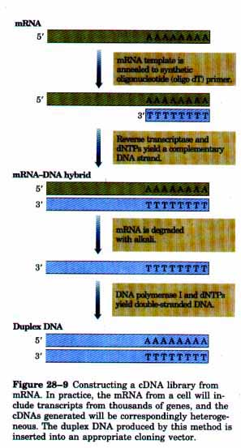
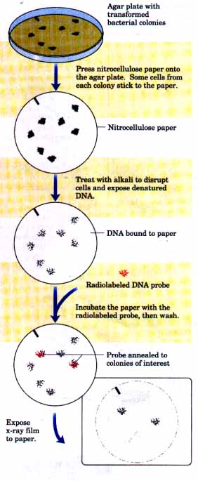
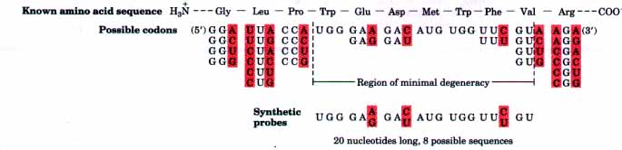
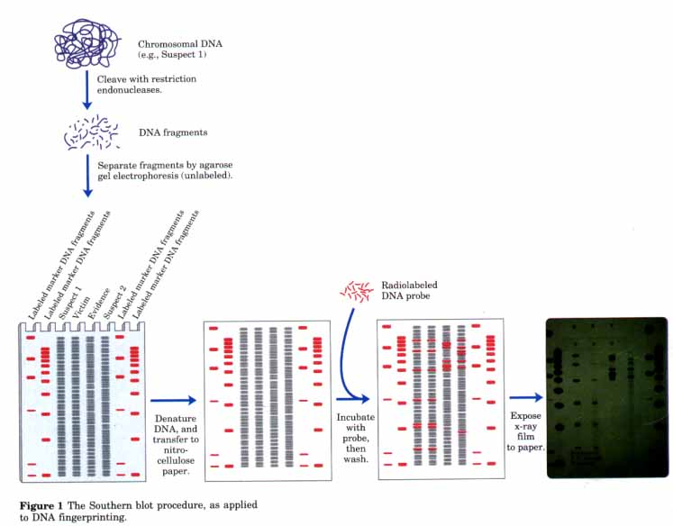
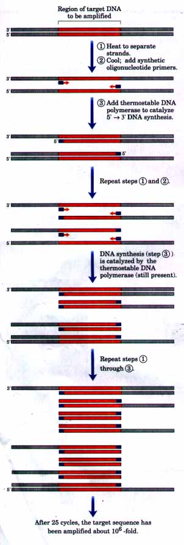

Because a single gene is only a very small part of a chromosome, isolating a DNA fragment containing a particular gene often requires two procedures. First, a DNA library is constructed that contains many thousands of DNA fragments derived from a cellular chromosome. Second, the DNA fragment containing the gene of interest is identified by taking advantage of the one property that distinguishes it from the other DNA fragments-its sequence.
A DNA library is a collection of DNA fragments derived from the genome of a particular organism, with each fragment attached to a cloning vector. In short, genomic DNA is cleaved into thousands of fragments, and all of them are cloned. Thus, the total information content of an organism is represented by all the fragxnents in the library in much the same way as human knowledge is represented by all the volumes in a book library. A vector is prepared for cloning by cleaving purified vector DNA at an appropriate position with a restriction endonuclease. Genomic DNA to be cloned is reduced to appropriately sized fragments by partial digestion with a restriction endonuclease (usually the same one used to prepare the vector), followed by a procedure such as sucrose density gradient (isopycnic) centrifugation to remove fragments that are too large or too small to be cloned into the chosen vector. Fragments are then mixed with the cleaved vector DNA and ligated. The mixture is used to transform bacterial cells or is packaged into bacteriophage particles as described above. The final result is a large population of bacteria or bacteriophages each harboring a different recombinant DNA molecule. Ideally, nearly all of the DNA in the genome will be represented in the library, and libraries constructed in this way are referred to as genomic libraries. Each transformed bacterium grows into a colony or "clone" of cells, all of which have the same recombinant plasmid. In the case of bacteriophages, each type of recombinant phage creates a plaque-a clear region of lysed cells within a lawn of bacteria distributed eveniy on an agar plate; all of the recombinant bacteriophages within a plaque are identical. The clone containing the particular gene a researcher is interested in must be identified within the thousands of clones in the library as described below. If the desired DNA is from a mammal with a genome of 3 × 109 base pairs of DNA and cosmids are used as cloning vectors, then the library must contain about 350,000 recombinant cosmids, each with a different insert of 35,000 to 45,000 base pairs, for there to be a 99% chance that any desired gene of unique sequence is represented in the library. The fragments in a genomic library derived from a higher eukaryote include not only genes but the noncoding DNA that makes up a large portion of many eukaryotic genomes.
A more specialized and exclusive DNA library can be constructed so as to include only those genes that are expressed in a given organism or even in certain cells or tissues. The critical difference between genes that are expressed and genes that are not is that the former are transcribed into RNA. The mRNA from an organism or certain cells derived from the organism is extracted, and complementary DNAs (cDNAs) are produced from the RNA in a multistep reaction catalyzed by reverse transcriptase (Fig. 28-9; Chapter 25). The resulting doublestranded DNA fragments are then inserted into a suitable vector and cloned, creating a population of clones called a cDNA library. Among the first eukaryotic genes characterized were those encoding globins, primarily because cloning of these genes was facilitated by making cDNA libraries from erythrocyte precursor cells, in which about half of the mRNA codes for globins. |
 |
After a DNA library has been generated, the challenge is to isolate one gene of interest from among the millions of other DNA segments represented in a DNA library. Because each gene has a unique nucleotide sequence, it often can be detected with the aid of a labeled (e.g., radioactive) DNA fragment that is complementary to it, called a probe. Typically, nitrocellulose paper is pressed onto an agar plate containing many individual bacterial colonies each containing a different recombinant DNA. Some cells from each colony adhere to the paper, forming a replica of the plate. The paper is treated with alkali to disrupt the cells and denature the DNA within, which remains localized to the region around the colony from which it came. The radioactive DNA probe is then added to the paper, annealing only to DNA containing the complementary gene. The labeled colony is visualized by autoradiography (Fig. 28-10). Detecting any nucleic acid with a labeled nucleic acid probe that is complementary to it is an application of nucleic acid hybridization (see Fig. 12-31), and many variations on this procedure have been developed to detect both DNA (Box 28-l, p. 996) and RNA.
| Frequently, the limiting
step in cloning a gene is finding or generating a
complementary strand of nucleic acid to use as a probe.
The origin of a probe depends on what is known about the
gene under investigation. Sometimes a homologous gene
cloned from another species can be used as a probe.
Alternatively, if the protein product of a gene has been
purified, probes can be designed and synthesized on the
basis of its amino acid sequence and a knowledge of the
genetic code (Fig. 28-11). In this work, the synthesis and sequencing methods for proteins and DNA described in previous chapters come together and complement one another. Just as the sequence of an isolated protein can be used to isolate the corresponding gene, a cloned gene can be used to isolate its protein product. The sequence of an isolated gene can be used to design and chemically synthesize a short peptide that represents part of the protein product of the gene. Antibodies to this synthetic peptide can then be used to identify and purify the protein itself (Chapter 6) for further study. Figure 28-10 Identifying a clone with the desired DNA segment; a schematic diagram of a hybridization method. The radioactive DNA probe hybridizes only with homologous DNA. The annealed radioactive probe is revealed by autoradiography. When the labeled colonies have been identified, the corresponding colonies on the original agar plate can be used as a source of cloned DNA for further study |
 |

Figure 28-11 Designing a probe to detect the gene for a protein of known amino acid sequence. Because the genetic code is degenerate, there is more than one possible DNA sequence that codes for any given amino acid sequence. As the correct DNA sequence cannot be known in advance, the probe is designed to be complementary to a region of the gene with minimal degeneracy. The oligonucleotides are synthesized with the sequence selectively randomized so that some contain either of the two possible nucleotides at each position of potential degeneracy (shaded in red). In the example shown, the synthesized oligonucleotide is actually a mixture of eight different sequences; one of the eight will complement the gene perfectly. All eight will match in at least 17 of 20 positions.
BOX 28-1A New Weapon in Forensic MedicineTraditionally, one of the most accurate methods for placing an individual at the scene of a crime has been a fingerprint. A new identification technique has become available based on methods developed for recombinant DNA technology. This is sometimes called DNA fingerprinting (also DNA typing or DNA profiling), and in some ways it is more powerful than any other identification method. DNA fingerprinting is based on sequence polymorphisms that occur in the human genome (and the genome of every other organism). Sequence polymorphisms are slight sequence differences (usually single base-pair changes) that occur from individual to individual once every few hundred base pairs, on average. Each difference from the consensus human genome sequence is generally present in only a fraction of the human population, but every individual has some of them. Some of the sequence changes affect recognition sites for restriction enzymes, resulting in variation from individual to individual in the size of certain DNA fragments produced by digestion with a particular restriction enzyme. These size differences are referred to as restriction fragment length polymorphisms, or RFLPs. A probe for a sequence that is repeated several times in the human genome generally identifies a few of the thousands of DNA fragments generated when the human genome is digested with a restriction endonuclease. The detection of RFLPs relies on a specialized hybridization procedure called Southern blotting (Fig. 1). DNA fragments from digestion of genomic DNA by restriction endonucleases are first separated according to size by electrophoresis in an agarose gel. The DNA fragments are denatured by soaking the gel in alkali, then transferred to nitrocellulose paper in such a way as to reproduce on the paper the distribution of fragments in the gel. The paper is then immersed in a solution containing a radioactively labeled DNA probe. Fragments to which the probe hybridizes are revealed by autoradiography, using procedures similar to those described in Figure 28-10. The genomic DNA sequences used in these tests are generally regions containing repetitive DNA (short sequences repeated thousands of times in tandem; see p. 797), which are common in the genomes of higher eukaryotes. The number of repeated units in such DNA varies from individual to individual (except in the case of identical twins). If a suitable probe is chosen, the pattern of bands in such an experiment can be distinctive for each individual tested. If several probes are used, the test can be made so selective that it can positively identify a single individual in the human population. However, the Southern blot procedure requires relatively fresh DNA samples and larger amounts of DNA than are generally present at a crime scene. To increase sensitivity, RFLP analysis is being augmented by polymerase chain reaction (PCR) methods (see Fig. 28-12), which permit vanishingly small amounts of DNA to be amplified. The improved tests allow DNA fingerprints to be obtained from a single hair, a small semen sample from a rape victim, or from samples that might be months or even many years old. Since their introduction in 1985, these methods have been developed to the point where they are proving decisive in court cases worldwide. In the example in Figure 1, the DNA from a semen sample obtained from a rape and murder victim was analyzed along with DNA samples from the victim and two suspects. Each of the DNA samples was cleaved into fragments and separated by gel electrophoresis. Radioactive DNA probes were used to identify a small subset of these fragments that contained sequences complementary to the probe. The sizes of the fragments identified varied from one individual to the next, as seen here in the different patterns for the three individuals (victim and two suspects) tested. One rape suspect's DNA exhibits a banding pattern identical to that of a semen sample taken from the victim. One probe was used here, but three or four different probes would be used to make a positive identification. Results have been used to help both convict and acquit suspects. DNA fingerprints can also be used to establish paternity with an extraordinary degree of certainty. The results of DNA fingerprinting have been successfully challenged in some court cases because of irregularities and a lack of controls in many early examples. The far-reaching impact of this technology on court cases will nevertheless continue to grow as standards are agreed upon and the methods become widely established in forensic laboratories.  |
Specific DNA Sequences Can Be AmplifiedIf one knows the sequence of at least part of a DNA
segment to be cloned, cloning can be facilitated by
amplifying the DNA segment in a process called a
polymerase chain reaction (PCR), invented by Kary Mullis
in 1984. Two oligonucleotides are synthesized, each
complementary to a short sequence in one strand of the
desired DNA segment and positioned just beyond the end of
the sequence to be amplifed; these synthetic
oligonucleotides can be used as primers for replication
of the DNA segment in vitro (Fig. 28-12). Isolated DNA
containing the segment to be cloned is heated briefly to
denature it, then cooled in the presence of a large
excess of the synthetic oligonucleotide primers. A
heat-stable DNA polymerase called TaqI and the four
deoxynucleoside triphosphates are then added, and the
primed DNA segment is selectively replicated. This
process is repeated through 25 or 30 cycles, which can
take only a few hours when automated, amplifying the DNA
segment to the point where it can be readily isolated and
cloned. |
 Figure 28-12 Amplifying a specific DNA segment with a polymerase chain reaction. DNA strands are separated by heating, then annealed to an excess of short synthetic DNA primers (blue) that flank the region to be amplified. After polymerization, the process is repeated for 25 or 30 cycles. The thermostable DNA polymerase TaqI (from Thermus thermophilus, bacteria that grow in hot springs) is not denatured by the heating steps. |